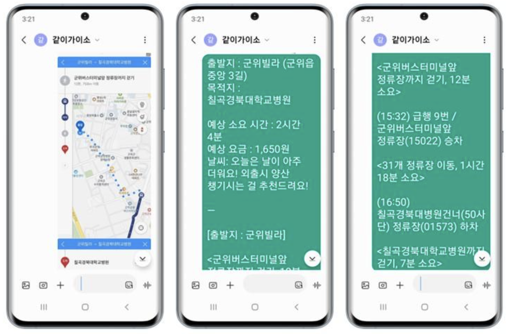

Collision Prevention System : LiDAR-Camera Calibration
August 2024
H-mobility Autocar Project
July 2024
Gachigayo: AI Conversation Service
August 2023 - September 2023
Isaac Sim Project
August 2024
Carebuddy
AMRLiDAR SLAMPythonObject DetectionLSTM
Brief Description
This project focuses on developing a mobile air purifier robot using LiDAR SLAM and an LSTM-based air quality scheduling system, integrated with object detection capabilities to avoid obstacles.
Motivation
In today’s world, air quality management is crucial, especially in urban environments. This project aims to address this challenge by creating a robot that autonomously purifies the air while navigating around obstacles to ensure optimal functionality in various indoor settings.
Scenario
In an indoor home environment, the system automatically identifies the space without user intervention, learns the air quality, and manages the air optimally.
Robot Characteristics:
Robot Model: Omo R1 Mini
Utilizes a low-spec board and 2D LiDAR for mapping, which imposes performance limitations.
Risk Analysis:
Air Quality Data Learning:
The system needs to continuously learn from incoming air quality data. However, hardware limitations prevent the robot from consistently receiving and processing continuous data streams.
Movement:
Continuous movement is necessary for effective air purification, but the robot's battery life poses a constraint, limiting the duration and extent of its operation.
Features and Implementation
Auto Mapping
Implemented automatic mapping using ROS's gmapping and explore_lite.
Due to low-spec hardware, automatic mapping with ROS2 could not be utilized.
Instead, automatic mapping was achieved using ROS's gmapping and explore_lite packages.
Below is the implementation method of the explore_lite package.
The automatic mapping feature was implemented by adjusting the path generation parameters through the explore_lite frontier algorithm and tuning the parameters that generate the map based on gmapping's lidar scan data.
The following image is the rqt graph of the final automapping implementation on the Omo R1 Mini robot.
Room Segmentation
Utilized the ipa_room_segmentation package to divide the mapped environment.
During this process, the following issues were encountered:
Excessive space segmentation as shown in the first image.
Coordinate mismatches of the segmented spaces on the map due to differences in the map's origin.
To address these issues, the following solutions were implemented:
Removed adjacent points through clustering.
Adjusted the origin in the map's YAML file.
Used OpenCV to flip and rotate the map itself to align the map coordinates correctly.
Below is the ROOM ID segmentation correctly positioned on the map.
Automapping and Navigation Demonstration
Air Quality Analysis
Collected air quality data using fine dust sensors and created an air quality prediction model using LSTM.
Web Control
Since actual users of the product may not be familiar with Linux, it is necessary to make it user-friendly.
Utilized the rosbridge_suite to include a WebSocket server, allowing web browsers to communicate with ROS.
roslibjs: Enables web applications to interact with ROS using the rosbridge protocol. ros2djs: Renders spatial information such as robots and maps, and interactively visualizes ROS topics and messages.
Hardware/Software
Structure
Project Demonstration
Cartographer AutoMapping
AMRAuto MappingJetson Nano
Brief Description
Implemented automatic mapping based on Cartographer on Allbot, utilizing components such as:
Motivation
Aiming to perform automatic mapping using Cartographer, which offers superior performance compared to Gmapping.
Environment
Robot Characteristics:
Robot Model: Allbot
Relatively heavy and has a short battery life.
Risk Analysis:
Sensor Utilization:
Although there are various sensors, camera latency occurs on the Jetson Nano.
Features and Implementation
Problem
To perform auto mapping in ROS, the published map must be received by explore_lite, but Cartographer does not specifically publish a map.
The structure of explore_lite is as follows.
The Cartographer map is not represented merely with values like EMPTY or UNKNOWN (required by explore_lite) but with various occupancy probability values.
The structure of Cartographer is as follows.
Solution
Therefore, we plan to solve the problem in the following way:
Publish cmap through /submap_list.
Convert the published cmap to a standard map.
Apply the frontier algorithm to the converted map to enable Auto Mapping.
In other words, receive the map data from the /cmap topic generated by Cartographer, convert it to the map data format used by Gmapping, and then publish it to the /map topic.
Project Demonstration
LiDAR-Camera Calibration
LiDAR-Camera CalibrationObject DetectionPython
Brief Description
This project focuses on designing an enhanced collision prevention system through precise distance measurements achieved via calibration. Utilized a target-based early fusion method with a checkerboard to perform calibration.
Motivation
To resolve the distance measurement issues encountered when using LiDAR and Camera independently in the CareBuddy project.
Scenario
Workflow: Object Detection through Camera → Distance Measurement via LiDAR and Camera → Display warning messages upon approaching specific distances.
Risk Analysis
Air Quality Data Learning:
The system needs to continuously learn from incoming air quality data. However, hardware limitations prevent the robot from consistently receiving and processing continuous data streams.
Movement:
Continuous movement is necessary for effective air purification, but the robot's battery life poses a constraint, limiting the duration and extent of its operation.
Calibration & Distance Measurement
Camera Calibration (Intrinsic Parameters)
Steps:
Checkerboard Data Collection: Collected a total of 32 checkerboard images captured from various angles.
Checkerboard Corner Detection: Utilized OpenCV's findChessboardCorners and cornerSubPix to detect corners in the checkerboard images.
Intrinsic Parameter Calculation: Calculated internal parameters (focal lengths fx, fy, principal point cx, cy, and distortion coefficients) using OpenCV's cv2.calibrateCamera with the collected checkerboard images.
LiDAR-Camera Point Matching
Steps:
LiDAR Measurement Height Check: Trimmed the foam board to the LiDAR measurement height (11.5cm) to match LiDAR points with camera image coordinates.
Placement: Attached tape at 11.5cm from the LiDAR-measured edges to facilitate point matching.
LiDAR-Camera Point Matching: Matched LiDAR and Camera points according to the marked areas.
Extrinsic Parameter Calculation
Steps:
solvePnP: Calculated the rotation matrix (R) and translation vector (T) between the Camera and LiDAR using LiDAR-Camera matching points.
Rodrigues Transformation:
Converted the rotation vector obtained from cv2.solvePnP into a rotation matrix using Rodrigues transformation.
Constructed the transformation matrix to convert LiDAR coordinates to Camera coordinates:
Transformation Matrix:
[[R | T]
[0 | 1]]
- R: Rotation Matrix
- T: Translation Vector
First Data Overlay
Issue: An additional line of LiDAR points appeared on the ground. Solution:
Adjusted YDLiDAR Launch File Parameters:
ranges: Distance values detected by the LiDAR sensor.
angle_min, angle_max: Range of measurement angles.
angle_increment: Increment between angles.
Result : No change.
LiDAR Position Adjustment:
When LiDAR projects onto a flat surface like the ground, reflected signals may be detected slightly off the original point. Solution Elevated the LiDAR position to mitigate the issue.
Data Overlay
Object Detection & Distance Measurement
Object Detection
Utilized the YOLOv8 model (yolov8n.pt) from the COCO Dataset via Ultralytics.
LiDAR-Based Distance Measurement
Measured distance based on the front-most LiDAR point of the detected object.
Converted polar coordinates to Cartesian coordinates using filtered distances (ranges) and angles (angles).
Calculated Euclidean distance.
Camera-Based Distance Measurement
1) Focal Length Extraction: Obtained internal parameters through checkerboard calibration.
2) Object Height Measurement in Image: Measured the height of the detected object in pixels using the bounding box from the YOLO model.
3) Actual Object Height Definition: Defined the actual height of the teddy bear to be recognized as 0.2m.
4) Distance Calculation:
2D LiDAR can only accurately measure distance if the detected object is parallel.
The detection ranges of LiDAR and Camera differ.
Solutions:
For distances below 0.2m, objects are not simultaneously detected by both sensors. Action: Use Camera-only distance measurement for objects under 0.2m.
For distances below 0.5m, average value errors occur. Action: Calculate the average only if the error is below 0.05m.
Distance Measurement & Collision Prevention System
1) 0.50m ≤ Object ≤ 0.70m: When an object is between 0.5m and 0.7m, display "CAUTION! Object Approaching!"
2) Object < 0.50m: When an object is closer than 0.5m, display "WARNING! Immediate Action Required!"
Project Demonstration
H-mobility Autocar Project
ROS2Object DetectionMotor ControlLiDARPython
Brief Description
Designed a control algorithm that adjusts the vehicle's tilt by training on collected lane data and developed a lane recognition model.
Scenario
Utilized a child-friendly vehicle equipped with cameras and LiDAR to perform autonomous driving through indoor lane recognition and traffic light detection.
Characteristics:
Hardware: 220V output battery, SMPS, motor driver, Arduino Mega 2560, potentiometer, Logitech C270 webcam, RPLiDAR
Lane Recognition
Problem 1: The steering angle abruptly switched between -7 and 7 degrees based on a step function with a lane slope of 0.
Solution 1:
Implemented a sine function to smooth the transition of steering changes.
Added target_point and car_center_point to adjust the steering angle based on the target_slope, maintaining it around 0.
Problem 2: The vehicle drifted to the right lane.
Solution 2: Adjusted the car_center_point within the ROI to correct the lane positioning.
Problem 3: Sudden changes in steering angle occurred during driving.
Solution 3: Implemented a limit to the steering angle change, restricting it to a maximum of 3 degrees per adjustment.
Control Algorithm
Problem 1: The steering angle abruptly switched between -7 and 7 degrees based on a step function with a lane slope of 0.
Solution 1:
Implemented a sine function to smooth the transition of steering changes.
Added target_point and car_center_point to adjust the steering angle based on the target_slope, maintaining it around 0.
Problem 2: The vehicle drifted to the right lane.
Solution 2: Adjusted the car_center_point within the ROI to correct the lane positioning.
Problem 3: Sudden changes in steering angle occurred during driving.
Solution 3: Implemented a limit to the steering angle change, restricting it to a maximum of 3 degrees per adjustment.
Gachigayo: AI Conversation Service
Prompt EngineeringFlaskAWSGitHubTTSSTTGPT API
Brief Description
Developed an AI-based conversational transportation guidance service tailored for the elderly facing challenges with smartphone usage. The service prioritizes user convenience and safety by providing comprehensive information on various transportation modes.
Motivation
The transportation service issues faced by the elderly in our society are an undeniable reality. According to studies by the Korea Institute for Health and Social Affairs and the Ministry of Health and Welfare, the elderly rely on public transportation despite facing challenges in accessing digital information. While services like the 100-won taxi exist, they fall short of meeting actual needs.
The rapid pace of digital technology adoption has led to a widening information gap for the elderly. They encounter difficulties in using smartphones and computers in their daily lives, including when utilizing transportation modes like buses and subways. Specifically, finding route information, schedules, and transfer details online poses significant barriers for the elderly.
To fundamentally address these issues, we proposed the 'Voice Guidance Service for the Elderly.' This service is designed to resolve the challenges the elderly face when using transportation, aiming to make their transportation experiences more convenient and safe.
Project Introduction
Gachigayo is an AI-driven conversational service designed to provide specialized transportation information for the elderly who are not well-versed in digital technologies. This service emphasizes user convenience and safety, offering detailed information on various transportation methods.
City/Intercity Travel: Provides bus, subway, and train route information along with taxi call connection services.
Location Information: Allows users to check operating hours of destinations and receive notifications about closing times.
Weather Information: Offers current and forecasted weather updates, recommends taxis during severe weather conditions, and alerts users about weather-related precautions.
To utilize this service, user consent for location information is required. By accurately identifying the departure and destination points through prompted queries, the service aims to deliver precise transportation information.
Market Research
According to the Korea Institute for Health and Social Affairs, the primary modes of transportation for the elderly are buses and subways, with a high usage rate of 68.2%, particularly among the 70-74 age group.
Based on the 2020 survey by the Ministry of Health and Welfare, 71.2% of the elderly use public transportation when going out. However, since most information services are online-centric, 74.1% of the elderly find it challenging. Moreover, they face difficulties in using digital devices in daily life.
Despite the accessibility of public transportation, the rapid digitalization has exacerbated the inconvenience for the elderly. The 2018 Information Gap Survey by the National Information Society Agency revealed that the digital literacy of the elderly is only half of the overall average. In an interview with Daily Good News, Mr. Park (80) stated, "I can only go to places I know, and it's burdensome to ask bus drivers for directions."
According to a Financial News article, as public transportation services become more digitalized, the elderly are struggling to adapt to these changes. For instance, Mr. A (late 50s) finds the smartphone app-based taxi booking unfamiliar, leading to long waits on the street. Similarly, Mr. C (71) has difficulty booking trains digitally and resorts to visiting stations or making reservations by phone.
Nowadays, most bus and subway information is available online, but approximately 74.1% of the elderly find it difficult to obtain such online information. In conclusion, the digitalization of public transportation services has posed multiple challenges for the elderly in adapting to these changes, reflecting a lack of efficient services tailored for them despite their active use of public transportation.
Key Features and Implementation
Although the smartphone usage capability of the elderly is steadily increasing, it remains limited to phone calls and video watching. Therefore, **Gachigayo** aims to provide a convenient service for the elderly with low digital literacy by developing an AI voice recognition-based conversational service.
Feature 1: City/Intercity Travel Route Guidance
Provides bus, subway, and train route information along with taxi call connection services.
Feature 2: Weather Information Guidance
Offers current weather information, recommends taxis during severe weather conditions, and alerts users about weather-related precautions.
Feature 3: SMS Service
Sends detailed route information and, for intercity travel, includes Koreail/Bus Terminal numbers in the messages.

Workflow
Converts speech to text using Google STT.
Extracts departure and destination information using GPT prompting.
Searches routes using Google Maps API.
Generates explanatory text using GPT prompting.
Converts text to speech using Google TTS.
Provides map and text guidance messages after call termination.
Revenue Model
Implemented a filial piety plan targeting adult children to support their elderly parents.
This project focuses on developing a mobile air purifier robot using LiDAR SLAM and LSTM-based air quality scheduling, with object detection capabilities to avoid obstacles.
Motivation
In today’s world, air quality management is crucial, especially in urban environments. This project aims to address this challenge by creating a robot that autonomously purifies the air while navigating around obstacles to ensure optimal functionality in various indoor settings.
Experimental Setup
Results
기술Skills
Robotics
ROS, Linux, Git, Isaac Sim, Gazebo, Computer Vision, Machine Learning